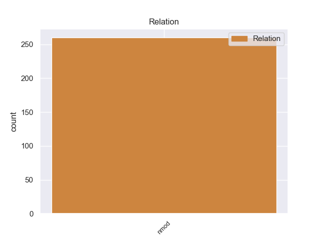
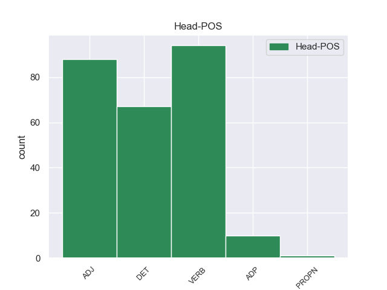
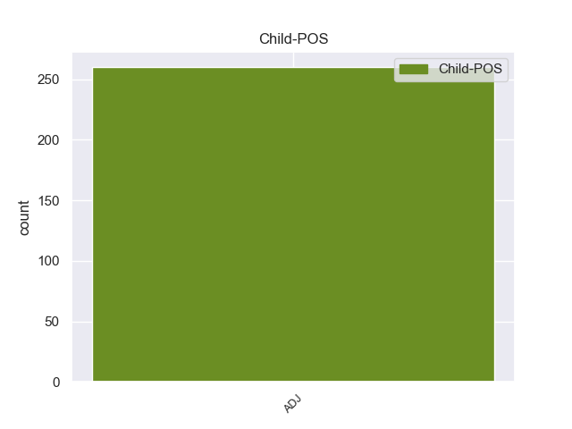

Distribution of features within this leaf



Agreement Rules sorted by frequency.
- When the dependent token is the nominal modifier(nmod) of the head token, and the head token is VERB and the dependent token is ADJ.
1 Θα _ _ _ _ 0 _ _ _
2 ήθελα _ _ _ _ 0 _ _ _
3 να _ _ _ _ 0 _ _ _
4 επιστήσω _ _ _ _ 0 _ _ _
5 την _ _ _ _ 0 _ _ _
6 προσοχή _ _ _ _ 0 _ _ _
7 όλων _ _ _ _ 0 _ _ _
8 των _ _ _ _ 0 _ _ _
9 συναδέλφων _ _ _ _ 0 _ _ _
10 σ _ _ _ _ 0 _ _ _
11 το _ _ _ _ 0 _ _ _
12 γεγονός _ _ _ _ 0 _ _ _
13 ότι _ _ _ _ 0 _ _ _
14 , _ _ _ _ 0 _ _ _
15 εάν _ _ _ _ 0 _ _ _
16 υπάρχουν _ _ _ _ 0 _ _ _
17 κάποιες _ _ _ _ 0 _ _ _
18 ελευθερίες _ _ _ _ 0 _ _ _
19 οι _ _ _ _ 0 _ _ _
20 οποίες _ _ _ _ 0 _ _ _
21 είναι _ _ _ _ 0 _ _ _
22 ζωτικής _ _ _ _ 0 _ _ _
23 σημασίας _ _ _ _ 0 _ _ _
24 για _ _ _ _ 0 _ _ _
25 την _ _ _ _ 0 _ _ _
26 άσκηση άσκηση VERB _ Case=Acc|Gender=Fem|Number=Sing 0 _ _ _
27 του _ _ _ _ 0 _ _ _
28 λειτουργήματος _ _ _ _ 0 _ _ _
29 της _ _ _ _ 0 _ _ _
30 δημόσιας _ _ _ _ 0 _ _ _
31 εκπροσώπησης _ _ _ _ 0 _ _ _
32 , _ _ _ _ 0 _ _ _
33 ιδίως _ _ _ _ 0 _ _ _
34 για _ _ _ _ 0 _ _ _
35 ένα _ _ _ _ 0 _ _ _
36 Κοινοβούλιο _ _ _ _ 0 _ _ _
37 σαν _ _ _ _ 0 _ _ _
38 το _ _ _ _ 0 _ _ _
39 δικό _ _ _ _ 0 _ _ _
40 μας _ _ _ _ 0 _ _ _
41 , _ _ _ _ 0 _ _ _
42 η _ _ _ _ 0 _ _ _
43 ελευθερία _ _ _ _ 0 _ _ _
44 της _ _ _ _ 0 _ _ _
45 επικοινωνίας επικοινωνίας ADJ _ Case=Acc|Gender=Fem|Number=Sing 26 nmod _ _
46 με _ _ _ _ 0 _ _ _
47 άλλους _ _ _ _ 0 _ _ _
48 πολίτες _ _ _ _ 0 _ _ _
49 και _ _ _ _ 0 _ _ _
50 με _ _ _ _ 0 _ _ _
51 τους _ _ _ _ 0 _ _ _
52 πολίτες _ _ _ _ 0 _ _ _
53 τρίτων _ _ _ _ 0 _ _ _
54 χωρών _ _ _ _ 0 _ _ _
55 , _ _ _ _ 0 _ _ _
56 καθώς _ _ _ _ 0 _ _ _
57 και _ _ _ _ 0 _ _ _
58 η _ _ _ _ 0 _ _ _
59 ελευθερία _ _ _ _ 0 _ _ _
60 μετακίνησης _ _ _ _ 0 _ _ _
61 , _ _ _ _ 0 _ _ _
62 είναι _ _ _ _ 0 _ _ _
63 κρίσιμες _ _ _ _ 0 _ _ _
64 για _ _ _ _ 0 _ _ _
65 τη _ _ _ _ 0 _ _ _
66 διεκπεραίωση _ _ _ _ 0 _ _ _
67 του _ _ _ _ 0 _ _ _
68 έργου _ _ _ _ 0 _ _ _
69 μας _ _ _ _ 0 _ _ _
70 . _ _ _ _ 0 _ _ _
1 Τόσο _ _ _ _ 0 _ _ _
2 το _ _ _ _ 0 _ _ _
3 ζήτημα _ _ _ _ 0 _ _ _
4 της _ _ _ _ 0 _ _ _
5 ασυλίας _ _ _ _ 0 _ _ _
6 όσο _ _ _ _ 0 _ _ _
7 και _ _ _ _ 0 _ _ _
8 η _ _ _ _ 0 _ _ _
9 αίτηση _ _ _ _ 0 _ _ _
10 για _ _ _ _ 0 _ _ _
11 άρση _ _ _ _ 0 _ _ _
12 της _ _ _ _ 0 _ _ _
13 έχουν _ _ _ _ 0 _ _ _
14 σχέση _ _ _ _ 0 _ _ _
15 μόνο _ _ _ _ 0 _ _ _
16 με _ _ _ _ 0 _ _ _
17 το _ _ _ _ 0 _ _ _
18 εάν _ _ _ _ 0 _ _ _
19 το _ _ _ _ 0 _ _ _
20 Δικαστήριο _ _ _ _ 0 _ _ _
21 μπορεί _ _ _ _ 0 _ _ _
22 να _ _ _ _ 0 _ _ _
23 εκδώσει _ _ _ _ 0 _ _ _
24 δεσμευτικά _ _ _ _ 0 _ _ _
25 βουλεύματα _ _ _ _ 0 _ _ _
26 για _ _ _ _ 0 _ _ _
27 τον _ _ _ _ 0 _ _ _
28 περιορισμό περιορισμό ADJ _ Case=Acc|Gender=Fem|Number=Sing 0 _ _ _
29 της _ _ _ _ 0 _ _ _
30 ελεύθερης ελεύθερης ADJ _ Case=Acc|Gender=Fem|Number=Sing 28 nmod _ _
31 μετακίνησης _ _ _ _ 0 _ _ _
32 των _ _ _ _ 0 _ _ _
33 βουλευτών _ _ _ _ 0 _ _ _
34 του _ _ _ _ 0 _ _ _
35 Ευρωπαϊκού _ _ _ _ 0 _ _ _
36 Κοινοβουλίου _ _ _ _ 0 _ _ _
37 ή _ _ _ _ 0 _ _ _
38 την _ _ _ _ 0 _ _ _
39 ελευθερία _ _ _ _ 0 _ _ _
40 τους _ _ _ _ 0 _ _ _
41 να _ _ _ _ 0 _ _ _
42 έρχονται _ _ _ _ 0 _ _ _
43 σε _ _ _ _ 0 _ _ _
44 επικοινωνία _ _ _ _ 0 _ _ _
45 με _ _ _ _ 0 _ _ _
46 άλλα _ _ _ _ 0 _ _ _
47 πρόσωπα _ _ _ _ 0 _ _ _
48 . _ _ _ _ 0 _ _ _
1 Ο _ _ _ _ 0 _ _ _
2 λόγος _ _ _ _ 0 _ _ _
3 γίνεται _ _ _ _ 0 _ _ _
4 για _ _ _ _ 0 _ _ _
5 τον _ _ _ _ 0 _ _ _
6 Χάουμε _ _ _ _ 0 _ _ _
7 Μάτας _ _ _ _ 0 _ _ _
8 , _ _ _ _ 0 _ _ _
9 ο _ _ _ _ 0 _ _ _
10 οποίος _ _ _ _ 0 _ _ _
11 ήταν _ _ _ _ 0 _ _ _
12 Υπουργός υπουργός DET _ Case=Acc|Gender=Neut|Number=Sing 0 _ _ _
13 Περιβάλλοντος _ _ _ _ 0 _ _ _
14 τα _ _ _ _ 0 _ _ _
15 έτη _ _ _ _ 0 _ _ _
16 2000-2003 _ _ _ _ 0 _ _ _
17 και _ _ _ _ 0 _ _ _
18 Περιφερειακός περιφερειακός ADJ _ Case=Acc|Gender=Fem|Number=Sing 12 nmod _ _
19 Πρωθυπουργός _ _ _ _ 0 _ _ _
20 των _ _ _ _ 0 _ _ _
21 Βαλεαρίδων _ _ _ _ 0 _ _ _
22 Νήσων _ _ _ _ 0 _ _ _
23 κατά _ _ _ _ 0 _ _ _
24 την _ _ _ _ 0 _ _ _
25 περίοδο _ _ _ _ 0 _ _ _
26 2003-2007 _ _ _ _ 0 _ _ _
27 . _ _ _ _ 0 _ _ _
1 Νέα _ _ _ _ 0 _ _ _
2 υποχώρηση _ _ _ _ 0 _ _ _
3 της _ _ _ _ 0 _ _ _
4 ελευθερίας _ _ _ _ 0 _ _ _
5 του _ _ _ _ 0 _ _ _
6 τύπου _ _ _ _ 0 _ _ _
7 διαπιστώνει _ _ _ _ 0 _ _ _
8 σ _ _ _ _ 0 _ _ _
9 την _ _ _ _ 0 _ _ _
10 Ελλάδα _ _ _ _ 0 _ _ _
11 η _ _ _ _ 0 _ _ _
12 οργάνωση _ _ _ _ 0 _ _ _
13 " _ _ _ _ 0 _ _ _
14 Δημοσιογράφοι _ _ _ _ 0 _ _ _
15 Χωρίς _ _ _ _ 0 _ _ _
16 Σύνορα _ _ _ _ 0 _ _ _
17 " _ _ _ _ 0 _ _ _
18 , _ _ _ _ 0 _ _ _
19 της _ _ _ _ 0 _ _ _
20 οποίας _ _ _ _ 0 _ _ _
21 η _ _ _ _ 0 _ _ _
22 ετήσια _ _ _ _ 0 _ _ _
23 έκθεση ο ADJ _ Case=Acc|Gender=Fem|Number=Sing 28 nmod _ _
24 αποτελεί _ _ _ _ 0 _ _ _
25 βαρόμετρο _ _ _ _ 0 _ _ _
26 για _ _ _ _ 0 _ _ _
27 την _ _ _ _ 0 _ _ _
28 κατάσταση κατάσταση ADP _ Case=Acc|Gender=Fem|Number=Sing 0 _ _ _
29 της _ _ _ _ 0 _ _ _
30 ελευθερίας _ _ _ _ 0 _ _ _
31 του _ _ _ _ 0 _ _ _
32 τύπου _ _ _ _ 0 _ _ _
33 σε _ _ _ _ 0 _ _ _
34 ολόκληρο _ _ _ _ 0 _ _ _
35 τον _ _ _ _ 0 _ _ _
36 κόσμο _ _ _ _ 0 _ _ _
37 . _ _ _ _ 0 _ _ _
Disagree Examples:
1 Ωστόσο _ _ _ _ 0 _ _ _
2 , _ _ _ _ 0 _ _ _
3 πολλοί _ _ _ _ 0 _ _ _
4 από _ _ _ _ 0 _ _ _
5 εμάς _ _ _ _ 0 _ _ _
6 σε _ _ _ _ 0 _ _ _
7 αυτό _ _ _ _ 0 _ _ _
8 το _ _ _ _ 0 _ _ _
9 Κοινοβούλιο _ _ _ _ 0 _ _ _
10 μεριμνούμε _ _ _ _ 0 _ _ _
11 ώστε _ _ _ _ 0 _ _ _
12 η _ _ _ _ 0 _ _ _
13 αρχή _ _ _ _ 0 _ _ _
14 της _ _ _ _ 0 _ _ _
15 αμοιβαίας _ _ _ _ 0 _ _ _
16 αναγνώρισης _ _ _ _ 0 _ _ _
17 να _ _ _ _ 0 _ _ _
18 μην _ _ _ _ 0 _ _ _
19 υπονομεύσει _ _ _ _ 0 _ _ _
20 τα _ _ _ _ 0 _ _ _
21 ατομικά _ _ _ _ 0 _ _ _
22 δικαιώματα _ _ _ _ 0 _ _ _
23 των _ _ _ _ 0 _ _ _
24 πολιτών _ _ _ _ 0 _ _ _
25 , _ _ _ _ 0 _ _ _
26 και _ _ _ _ 0 _ _ _
27 σε _ _ _ _ 0 _ _ _
28 αυτό _ _ _ _ 0 _ _ _
29 το _ _ _ _ 0 _ _ _
30 πεδίο _ _ _ _ 0 _ _ _
31 γενικά _ _ _ _ 0 _ _ _
32 είναι _ _ _ _ 0 _ _ _
33 πρωταρχικής _ _ _ _ 0 _ _ _
34 σημασίας _ _ _ _ 0 _ _ _
35 να _ _ _ _ 0 _ _ _
36 τηρούνται _ _ _ _ 0 _ _ _
37 τα _ _ _ _ 0 _ _ _
38 νομικά _ _ _ _ 0 _ _ _
39 εχέγγυα _ _ _ _ 0 _ _ _
40 που _ _ _ _ 0 _ _ _
41 περιλαμβάνονται _ _ _ _ 0 _ _ _
42 , _ _ _ _ 0 _ _ _
43 όχι _ _ _ _ 0 _ _ _
44 μόνο _ _ _ _ 0 _ _ _
45 σ _ _ _ _ 0 _ _ _
46 την _ _ _ _ 0 _ _ _
47 Ευρωπαϊκή _ _ _ _ 0 _ _ _
48 Σύμβαση _ _ _ _ 0 _ _ _
49 για _ _ _ _ 0 _ _ _
50 την _ _ _ _ 0 _ _ _
51 προάσπιση _ _ _ _ 0 _ _ _
52 των _ _ _ _ 0 _ _ _
53 δικαιωμάτων _ _ _ _ 0 _ _ _
54 του _ _ _ _ 0 _ _ _
55 ανθρώπου _ _ _ _ 0 _ _ _
56 , _ _ _ _ 0 _ _ _
57 αλλά _ _ _ _ 0 _ _ _
58 επίσης _ _ _ _ 0 _ _ _
59 , _ _ _ _ 0 _ _ _
60 θα _ _ _ _ 0 _ _ _
61 έλεγα _ _ _ _ 0 _ _ _
62 σ _ _ _ _ 0 _ _ _
63 τον _ _ _ _ 0 _ _ _
64 κ. _ _ _ _ 0 _ _ _
65 Blockland _ _ _ _ 0 _ _ _
66 , _ _ _ _ 0 _ _ _
67 σ _ _ _ _ 0 _ _ _
68 τον _ _ _ _ 0 _ _ _
69 Χάρτη ο DET _ Case=Gen|Gender=Fem|Number=Sing 0 _ _ _
70 των _ _ _ _ 0 _ _ _
71 Θεμελιωδών _ _ _ _ 0 _ _ _
72 Δικαιωμάτων _ _ _ _ 0 _ _ _
73 της _ _ _ _ 0 _ _ _
74 ΕΕ ο ADJ _ Case=Acc|Gender=Fem|Number=Sing 69 nmod _ _
1 Οι _ _ _ _ 0 _ _ _
2 ρεπόρτερς _ _ _ _ 0 _ _ _
3 της _ _ _ _ 0 _ _ _
4 εκπομπής _ _ _ _ 0 _ _ _
5 ξεναγούνται _ _ _ _ 0 _ _ _
6 σ _ _ _ _ 0 _ _ _
7 τους _ _ _ _ 0 _ _ _
8 χώρους χώρους ADJ _ Case=Acc|Gender=Fem|Number=Sing 0 _ _ _
9 της _ _ _ _ 0 _ _ _
10 Ιεράς _ _ _ _ 0 _ _ _
11 Μονής _ _ _ _ 0 _ _ _
12 της _ _ _ _ 0 _ _ _
13 Ευαγγελίστριας ευαγγελίστριαςς ADJ _ Case=Gen|Gender=Fem|Number=Sing 8 nmod _ _
14 σ _ _ _ _ 0 _ _ _
15 τη _ _ _ _ 0 _ _ _
16 Σκιάθο _ _ _ _ 0 _ _ _
17 , _ _ _ _ 0 _ _ _
18 η _ _ _ _ 0 _ _ _
19 οποία _ _ _ _ 0 _ _ _
20 ιδρύθηκε _ _ _ _ 0 _ _ _
21 το _ _ _ _ 0 _ _ _
22 1797 _ _ _ _ 0 _ _ _
23 , _ _ _ _ 0 _ _ _
24 διαδραματίζοντας _ _ _ _ 0 _ _ _
25 σημαντικό _ _ _ _ 0 _ _ _
26 ρόλο _ _ _ _ 0 _ _ _
27 σ _ _ _ _ 0 _ _ _
28 τον _ _ _ _ 0 _ _ _
29 απελευθερωτικό _ _ _ _ 0 _ _ _
30 αγώνα _ _ _ _ 0 _ _ _
31 κατά _ _ _ _ 0 _ _ _
32 των _ _ _ _ 0 _ _ _
33 Τούρκων _ _ _ _ 0 _ _ _
34 , _ _ _ _ 0 _ _ _
35 ενώ _ _ _ _ 0 _ _ _
36 σήμερα _ _ _ _ 0 _ _ _
37 φιλοξενεί _ _ _ _ 0 _ _ _
38 σπάνια _ _ _ _ 0 _ _ _
39 αντικείμενα _ _ _ _ 0 _ _ _
40 και _ _ _ _ 0 _ _ _
41 χειρόγραφα _ _ _ _ 0 _ _ _
42 . _ _ _ _ 0 _ _ _
1 Υπάρχει _ _ _ _ 0 _ _ _
2 μία _ _ _ _ 0 _ _ _
3 ομάδα _ _ _ _ 0 _ _ _
4 τροπολογιών _ _ _ _ 0 _ _ _
5 που _ _ _ _ 0 _ _ _
6 υπέβαλαν _ _ _ _ 0 _ _ _
7 οι _ _ _ _ 0 _ _ _
8 συνάδελφοι _ _ _ _ 0 _ _ _
9 της _ _ _ _ 0 _ _ _
10 Ομάδας _ _ _ _ 0 _ _ _
11 των _ _ _ _ 0 _ _ _
12 Πρασίνων _ _ _ _ 0 _ _ _
13 / _ _ _ _ 0 _ _ _
14 Ευρωπαϊκής _ _ _ _ 0 _ _ _
15 Ελεύθερης _ _ _ _ 0 _ _ _
16 Συμμαχίας _ _ _ _ 0 _ _ _
17 , _ _ _ _ 0 _ _ _
18 που _ _ _ _ 0 _ _ _
19 προσπαθούν _ _ _ _ 0 _ _ _
20 να _ _ _ _ 0 _ _ _
21 πουν _ _ _ _ 0 _ _ _
22 ότι _ _ _ _ 0 _ _ _
23 η _ _ _ _ 0 _ _ _
24 έγκριση ο VERB _ Case=Acc|Gender=Fem|Number=Sing 0 _ _ _
25 του _ _ _ _ 0 _ _ _
26 ευρωπαϊκού _ _ _ _ 0 _ _ _
27 εντάλματος _ _ _ _ 0 _ _ _
28 σύλληψης _ _ _ _ 0 _ _ _
29 εξαρτάται _ _ _ _ 0 _ _ _
30 από _ _ _ _ 0 _ _ _
31 τη _ _ _ _ 0 _ _ _
32 βελτίωση _ _ _ _ 0 _ _ _
33 συγκεκριμένων _ _ _ _ 0 _ _ _
34 δικαστικών _ _ _ _ 0 _ _ _
35 προτύπων _ _ _ _ 0 _ _ _
36 σ _ _ _ _ 0 _ _ _
37 την _ _ _ _ 0 _ _ _
38 Ευρωπαϊκή ευρωπαϊκή ADJ _ Case=Gen|Gender=Fem|Number=Sing 24 nmod _ _
39 Ένωση _ _ _ _ 0 _ _ _
40 . _ _ _ _ 0 _ _ _
1 Η _ _ _ _ 0 _ _ _
2 Βουλή _ _ _ _ 0 _ _ _
3 δήλωσε _ _ _ _ 0 _ _ _
4 ότι _ _ _ _ 0 _ _ _
5 " _ _ _ _ 0 _ _ _
6 θα _ _ _ _ 0 _ _ _
7 ξανασυνεδριάσει ξανασυνεδριάσει VERB _ Case=Gen|Gender=Fem|Number=Sing 0 _ _ _
8 σ _ _ _ _ 0 _ _ _
9 τις _ _ _ _ 0 _ _ _
10 12 _ _ _ _ 0 _ _ _
11 το _ _ _ _ 0 _ _ _
12 μεσημέρι _ _ _ _ 0 _ _ _
13 της _ _ _ _ 0 _ _ _
14 Τρίτης τρίτης ADJ _ Case=Acc|Gender=Fem|Number=Sing 7 nmod _ _
15 " _ _ _ _ 0 _ _ _
16 . _ _ _ _ 0 _ _ _
1 Βορειοκορεατικά _ _ _ _ 0 _ _ _
2 γυμνάσια γυμνάσια ADJ _ Case=Gen|Gender=Fem|Number=Sing 5 nmod _ _
3 με _ _ _ _ 0 _ _ _
4 πραγματικά _ _ _ _ 0 _ _ _
5 πυρά πυρά VERB _ Case=Acc|Gender=Fem|Number=Sing 0 _ _ _
6 σε _ _ _ _ 0 _ _ _
7 διαφιλονικούμενη _ _ _ _ 0 _ _ _
8 περιοχή _ _ _ _ 0 _ _ _
9 μεταξύ _ _ _ _ 0 _ _ _
10 Βορείου _ _ _ _ 0 _ _ _
11 και _ _ _ _ 0 _ _ _
12 Νοτίου _ _ _ _ 0 _ _ _
13 Κορέας _ _ _ _ 0 _ _ _
14 . _ _ _ _ 0 _ _ _